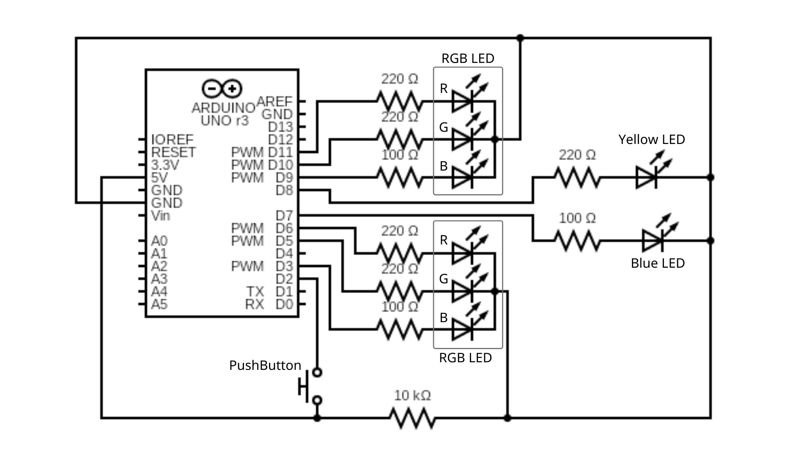

A2: Fade!
Kierra Long
Schematic
This is my schematic of the circuit. It connects a PushButton loop, as well as 4 LEDs (2 RGB LEDs and 2 regular LEDs) to the Arduino.
The PushButton is connected to 5V Power and ground from one side, and Pin 2 from the other, to sense when the button is pressed.
The RGB LEDs are connected to 3 different pins each (with corresponding resistors for color value) and ground.
The Blue and Yellow LEDs are connected to pin 7 and 8 with 100 and 220 Ohm resistors, respectively, and ground.
The Pins from the arduino are 5V when on high, so I used Ohms law to calculate
the resistor current for each LED. The calculations are as follow:
For Blue LEDs:
(5V-3.3V)=(0.02A)(X)
(1.7V)=(0.02A)(X)
X=85 Ohms
Round up to 100 Ohm resistor.
For Green, Yellow, Red LEDs:
(5V-1.8V)=(0.02A)(X)
(3.2V)=(0.02A)(X)
X=160 Ohms
Round up to 220 Ohm resistor.
After passing through the LEDs, all wires connect back to Ground.
The 10K resistor from the PushButton loop was chosen to provide an ample amount of resistence to keep the current quite small.
Created with https://www.circuit-diagram.org/ & Canva
Circuit
This is the circuit based off of the previous schematic, made using a breadboard and Arduino.
Code
// constants to set pin numbers:
const int buttonPin = 2; // the number of the pushbutton pin
const int B = 3; // the number of the blue part of LED 1
const int G = 5; // the number of the green part of LED 1
const int R = 6; // the number of the red part of LED 1
const int Blu = 7; // the number of the blue LED
const int BB = 9; // the number of the blue part of LED 2
const int GG = 10; // the number of the green part of LED 2
const int RR = 11; // the number of the red part of LED 2
const int Y = 8; // the number of the yellow LED
int buttonState = 0; // variable for reading the pushbutton status
const int buttonPress = 0; // variable to keep track of clicks
void setup() {
// put your setup code here, to run once:
int y[] = {B, G, R, Blu, BB, GG, RR, Y}; // array of the pins
for (int x=0; x<8; x++) { //for loop through whole array
int pin = y[x]; //pull out pin number
pinMode(pin, OUTPUT); // initialize the LED pin as an output
}
pinMode(buttonPin, INPUT); // initialize the pushbutton pin as an input
}
void loop() {
// put your main code here, to run repeatedly:
buttonState = digitalRead(buttonPin); // read the state of the pushbutton value
if (buttonState == HIGH) { // check if the pushbutton is pressed. If it is, the buttonState is HIGH
// Cool-Toned Colors
digitalWrite(Y, LOW); // turn LED off
// Fade to blues
// LED 1
for(int i = 240; i > 80;i--){ // differences in red values
analogWrite(R, i); // adjust red value
delay(2); //wait
}
for(int i = 60; i < 170;i++){ // differences in green values
analogWrite(G, i); // adjust green value
delay(2); // wait
}
for(int i = 4; i < 250;i++){ // differences in blue values
analogWrite(B, i); // adjust blue value
delay(2); // wait
}
// LED 2
for(int i = 210; i > 40;i--){ // differences in red values
analogWrite(RR, i); // adjust red value
delay(2); //wait
}
for(int i = 100; i < 130;i++){ // differences in green values
analogWrite(GG, i); // adjust green value
delay(2); // wait
}
for(int i = 5; i < 250;i++){ // differences in blue values
analogWrite(BB, i); // adjust blue value
delay(2); // wait
}
digitalWrite(Blu, HIGH); // turn LED on
delay (1500); //wait
//Variable LED 1
analogWrite(R, 80); // set red value
analogWrite(G, 170); // set green value
analogWrite(B, 250); // set blue value
//Variable LED 2
analogWrite(RR, 40); // set red value
analogWrite(GG, 130); // set green value
analogWrite(BB, 250); // set blue value
} else {
// Warm-Toned Colors
digitalWrite(Blu, LOW); // turn LED off
// Fade to Yellows
// LED 2
for(int i = 40; i < 210;i++){ // differences in red values
analogWrite(RR, i); // adjust red value
delay(2); //wait
}
for(int i = 130; i > 100;i--){ // differences in green values
analogWrite(GG, i); // adjust green value
delay(2); // wait
}
for(int i = 250; i > 5;i--){ // differences in blue values
analogWrite(BB, i); // adjust blue value
delay(2); // wait
}
// LED 1
for(int i = 80; i < 240;i++){ // differences in red values
analogWrite(R, i); // adjust red value
delay(2); //wait
}
for(int i = 170; i > 60;i--){ // differences in green values
analogWrite(G, i); // adjust green value
delay(2); // wait
}
for(int i = 250; i > 4;i--){ // differences in blue values
analogWrite(B, i); // adjust blue value
delay(2); // wait
}
digitalWrite(Y, HIGH); // turn LED on
delay (1500); // wait
}
}
Operation

This is a Gif of the operation of the fading lights. The goal of my circuit was to start off with Warm-Toned colors, then when the button is pushed/held,
the warm colors will fade into cool colors. This happens by the yellow light turning off, and the light yellow middle lights
fading into blue, before the blue light on the end turns on. The reverse happens when the button is released,
and the blue lights fade into yellow, before the yellow light on the end turns on.
However, I did have some challenges with this. The Gif shows what I wanted the transition to look like, only because I timed the button
presses right, so that the lights transition to the opposite color before their if-statement repeats.
What happens when I don't time it right, is that the warm-toned loop will repeat itself, and start fading the LEDs from colors
that it wasn't actually at, which makes them slightly jump to different colors. This isn't awful, but I wanted to find a way
for the warm colors to stay still, unless the button is held down- in which they seamlessly transition to cool colors and stay on,
and when the button is released, they seamlessly transition back again. But, I didn't figure out a way to do this.